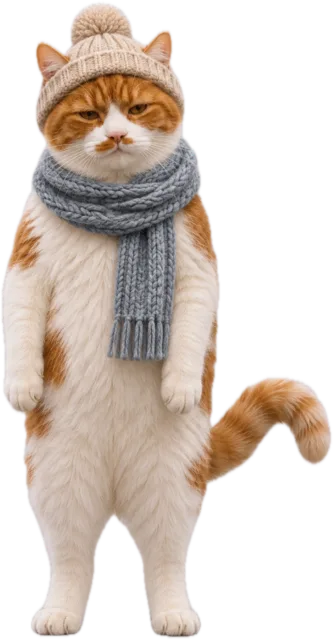
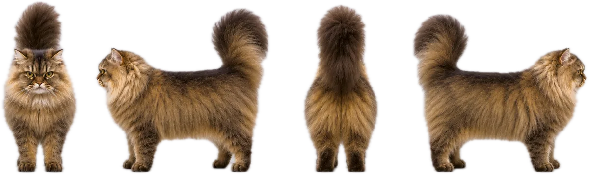
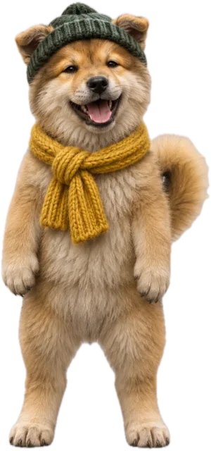
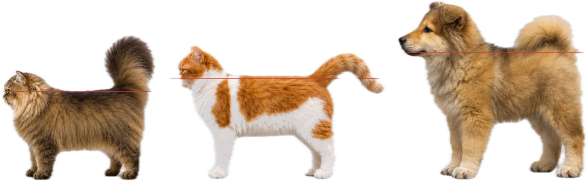
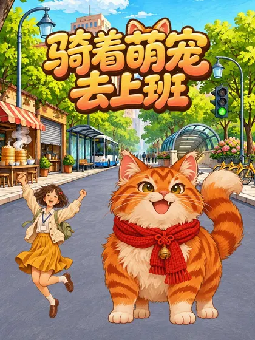
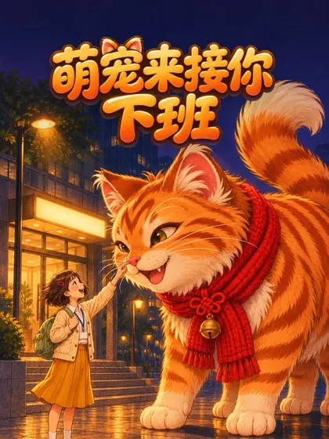
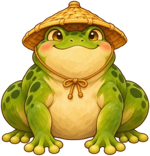
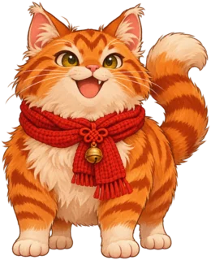
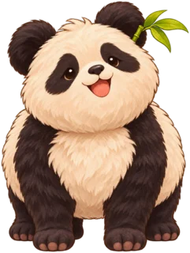
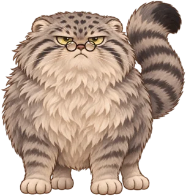

乖乖
橘白大猫 · 8 岁家里资历最老，个子也比我高。可胆子最小，快递箱挪一下，它就退到墙角去。认准的饭盆位置，谁也挪不动。
凶度 100 · 摸我一下，掉一格
我叫皮妞妞，小名妞妞，也叫皮皮。黑金渐层长毛猫，一两岁。
常有人以为我是矮脚猫。不是！腿是正常长的，只是毛太多，裹得像穿了条毛绒裤。

哪里有香味，我就往哪里凑。吃到烤红薯，我会说：还行。另一半，我用爪子按住。
客厅地板就是床。肚皮朝上，四只脚朝天，谁路过都不起来。
想吃冻干的时候，我先用脑袋蹭腿，再软软地叫一声。铲屎官拒绝不了。
我天生一张鳌拜脸，看着像在生气。其实没有，我只是脸长这样。不信你摸摸我下巴。

家里资历最老，个子也比我高。可胆子最小，快递箱挪一下，它就退到墙角去。认准的饭盆位置，谁也挪不动。

一片落叶飘过去，它能傻乐半天。跑起来四只脚都离地。最近还睡上了我们的猫抓板，大概以为自己也是猫。

一共两个，主角都是一只系红围巾的大橘猫。不是我。
我有意见，但还是推荐一下：不用下载，不用登录，点开就能玩。


孵出今天的坐骑，躲开“在吗？”消息轰炸，赶在电梯关门前打卡。
去玩 →
大橘猫来公司门口接你，一路兜风吃小鱼干，到家拍一张合影。
去玩 →



游戏里还有这几位。都没我好看。